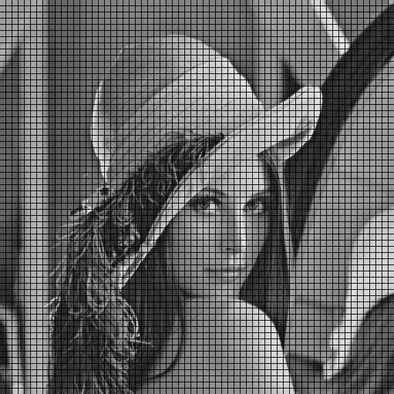
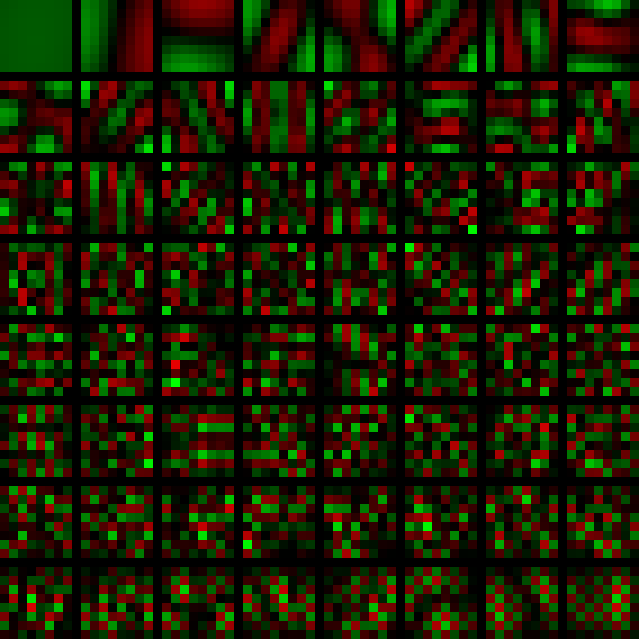

Images take up a lot of space. In one Android software project I have, the images take up more than 99% of the space. Thus, everyone is happy when we can make them take up less space.
There are two main ways we can reduce the space. We can either represent the images in a more efficient way (lossless compression) or we can remove some of the data (lossy compression). For most images, lossless compression has a limit of about 2:1 compression, that is, every compressed byte will give us 2 original bytes. Lossy compression, however, can give us much higher ratios because most of the information in most pictures is not important to the viewer. Most people don't care whether two adjacent pixels representing fuzz on a hat differ by 1/2% or 1%. By throwing out this type of information, 10:1 compression ratios are quite common.
Block-based PCA is a method of lossy compression that uses rudimentary forms of many of the same techniques and processes used by algorithms like the JPEG coding algorithm. Unlike the discrete-cosine transform used in JPEG, however, PCA generates components that are easy to understand and visualize. Thus, it serves as a good introduction to lossy image compression. As I was developing this material, I used Matlab, so I will include Matlab code for the various sections.
Many lossy compression methods can be summarized by the following steps:
The first step in our algorithm is to break the image up into pieces that are likely be similar in some way. Because adjacent pixels are usually from the same object, breaking the image into contiguous regions is a useful heuristic. For the same reason, it is good to make pixels in a region as close as possible to one another, so convex regions are usually chosen. Because it takes information to transmit the shapes of the regions, usually the regions chosen are fixed in shape and size. Because we are trying to reduce redundancy we don't want to represent pixels twice, we choose regions that do not overlap. For computational simplicity and potential hardware implementations, squares that have 22n pixels inside are usually selected. Of such squares, 8x8 has become traditional - it provides a good trade-off between maximum compression ratio and computational complexity.
If we break the famous lena image into 8x8 squares, it looks like this:
There are many, many tutorials on PCA, so I will not get into the mathematical details. For our purposes, PCA is a method of finding a good block description language among a set of simple languages having the following characteristics.
The fixed blocks found by PCA
(except for the mean) are called the principal components. They are usually given in a matrix with the most important
components first. The description of a block in terms of the principal components is the scores of that block.
If you take each 8x8 block and flatten it, making it a row in a matrix of all blocks, the
princomp
routine in Matlab will return the principal components and the scores.
I have written code to flatten an image (which has a width and height that are both multiples of 8) into a matrix
suitable for input to princomp. It is available as a downloadable file. You use it by writing:
lena = imread('lena512.png');
broken = break_up_image(lena);
mean_block = mean(broken);
[comp,score,eigen]=princomp(broken);
When lena is processed by PCA, the mean block is:
The principal component blocks are:
In the displayed blocks, the green parts are positive, the red parts are negative. The most important component is the block in the upper left and the least important is in the lower right.
A component is always more important than the component to its right and always more important than the component below it.
You can generate this data using the following code after downloading
reconstruct_image.m and
block_broken_image.m
and green_red_image.m:
comp_blocks_raw_im=reconstruct_image(comp',64,false);
comp_blocks_im = green_red_image(comp_blocks_raw_im);
comp_blocks_with_lines = block_broken_image(comp_blocks_im);
imwrite(comp_blocks_with_lines,'lena_prin_comp_blocks.png','png');
A brief view of the components reveals that the most important component is a flat color. The second is a vertical edge. The third is a horizontal edge. The 4th and 5th are diagonal lines. The 6th is a derivative of the 4th. The 7th holds vertical lines and the 8th holds horizontal lines. The patterns get finer and more complex as they account for less of the remaining reproduction error.